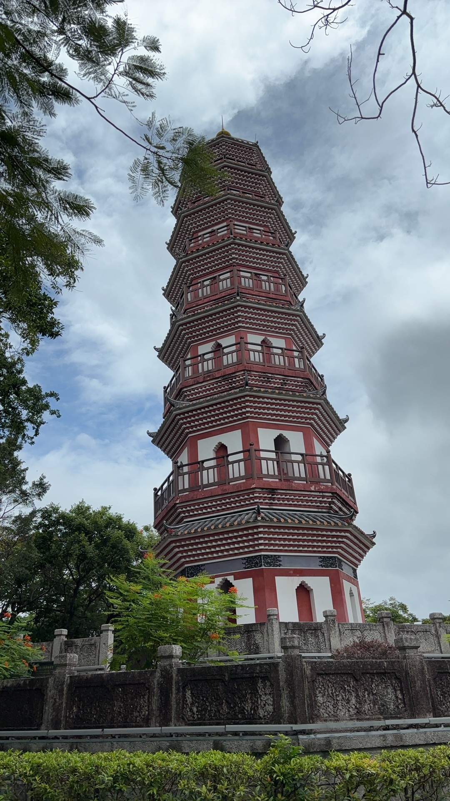
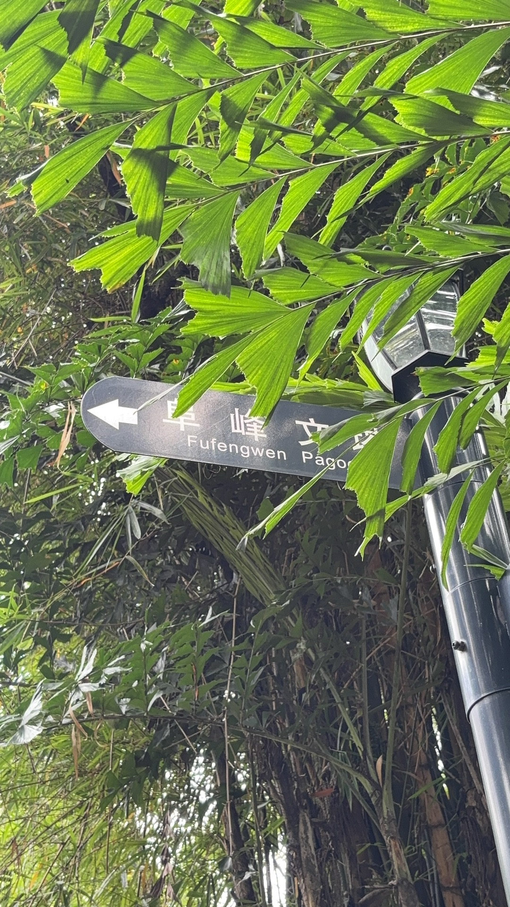
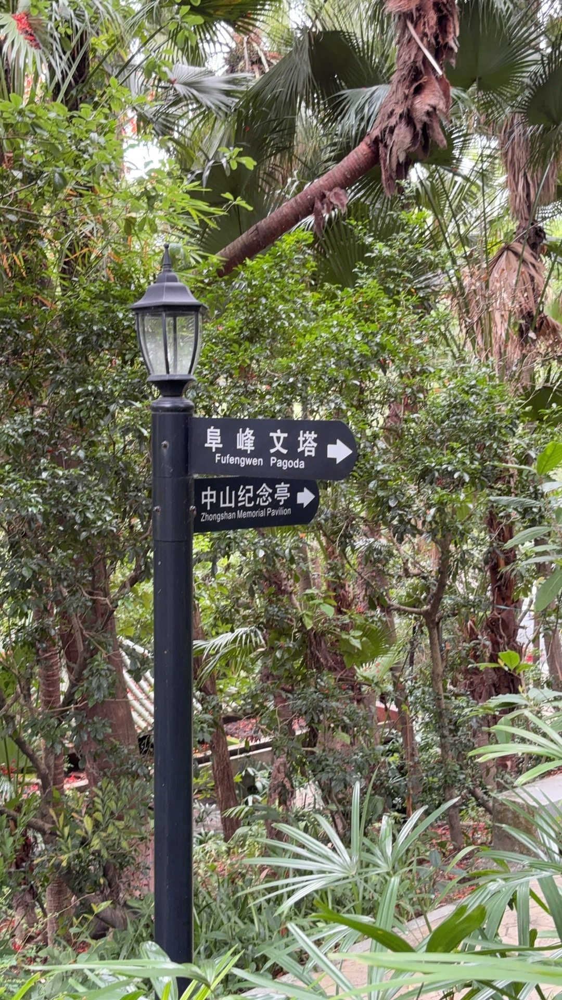
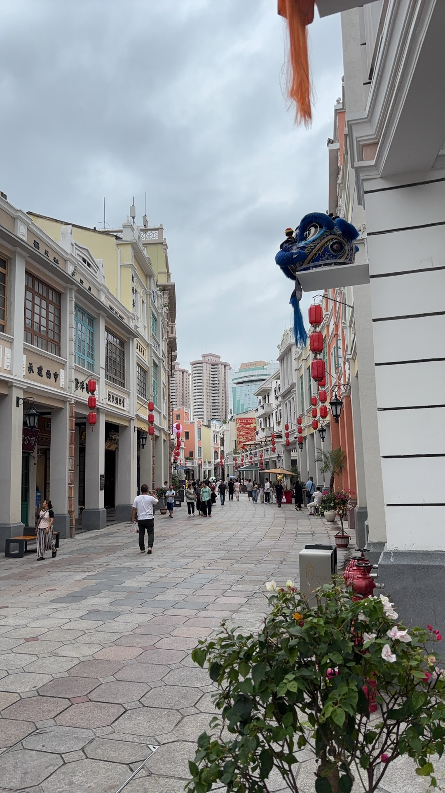

今天去了中山。🌿 这座藏在珠江口西岸的城市，是孙中山先生的故乡——以前只在课本里读过他的故事，今天终于亲自踏上了这片土地。
出发前做了些功课：中山不大，景点集中，既有厚重的历史记忆，也有烟火人间。一天时间足够把精华走一遍。于是从故居开始，一路逛到老街，最后带着满肚子的石岐乳鸽和杏仁饼心满意足地返程。
📍 第一站：孙中山故居纪念馆
到达第一站，自然是孙中山故居纪念馆。还没走近就能感受到那种庄严的氛围——红墙绿瓦，中西合璧的二层小楼静静地矗立在绿树丛中，就像孙中山先生本人一样，外表温和，内心坚定。

馆内陈列着大量珍贵的历史照片、手稿和实物，从中山先生少年时代在檀香山读书，到后来奔走革命、创建民国，每一件展品都在诉说着一段波澜壮阔的历史。站在二楼的书房前，看着他当年用过的书桌和台灯，忽然有种穿越时空的感动——就是在这里，或许正是在这些灯光下，他写下的那些文字，改变了整个中国的命运。
"世界潮流，浩浩荡荡。顺之则昌，逆之则亡。"
这句名言在馆内随处可见。走出故居的时候，我回头又望了一眼那栋小楼。它不只是孙中山先生的家，更是中国近代史的起点之一。
📍 第二站：詹园 — 岭南园林的诗意
从故居出来，车子开进了绿意更浓的区域。詹园，是今天意外的惊喜——据说是岭南地区最大的岭南风格园林。

一进园子就被震撼了。假山叠石、小桥流水、雕花窗棂、回廊曲折……每一个角落都像一幅水墨画。园林的布局讲究"步移景异"，走着走着，眼前 suddenly 就开阔了——一池碧水倒映着飞檐翘角，几只白鹭在水面上悠悠地游着。
我挑了个临水的长廊坐下，带了瓶水，就着蝉鸣和风声发了半个小时的呆。这种"偷得浮生半日闲"的感觉，在城市里真的很难得。
📍 第三站：石岐老街 — 人间烟火最抚凡人心
逛完园林肚子咕咕叫，直奔石岐老街。这里的市井气息浓郁到让人感动——两边是几十年的老店，石板路被岁月磨得发亮，空气中飘着乳鸽的焦香和粥店的米香。

石岐乳鸽 一定要试。外皮金黄酥脆，咬下去"咔嚓"一声，里面的肉嫩到爆汁。我连吃了两只，根本停不下来。老板笑着说我"外地来的吧，第一次来中山？"
除了乳鸽，还尝了鲍鱼鸡、脆肉鲩、现炒牛河、煲仔饭……每样都好吃，每样都舍不得放下筷子。这种"随便走进一家店都很好吃"的城市，值得来很多次。
📍 最后一站：孙文西路骑楼街
傍晚时分，我踱步到了孙文西路。这条街的骑楼建筑很有味道——斑驳的墙面、拱形的门廊、铁艺的阳台，中西合璧的风格让时光在这里变得模糊。

夕阳斜照在骑楼上，影子被拉得很长。街边的老人坐在竹椅上摇着蒲扇，小孩在石板路上跑来跑去。有个阿婆在卖自家蒸的杏仁饼，我买了一盒当手信。她用的是那种老式的油纸包，用麻绳扎起来，拿到手的时候还在散发淡淡的杏仁香。
后记
离开中山的时候，天已经完全黑了。珠江口的晚风凉凉的，很舒服。
中山或许不是那种第一眼就惊艳的城市——它没有高楼林立的现代感，也没有过度包装的网红景点。但它有一种独特的魅力：不张扬、不浮躁，有历史的厚重感，也有生活的烟火气。这里的节奏很慢，人很慢，食物很慢，连时间都慢了下来。
伟人故里，果然名不虚传。这里的一砖一瓦、一街一巷，都藏着值得被记住的故事。
中山，后会有期。👋
— Jessie